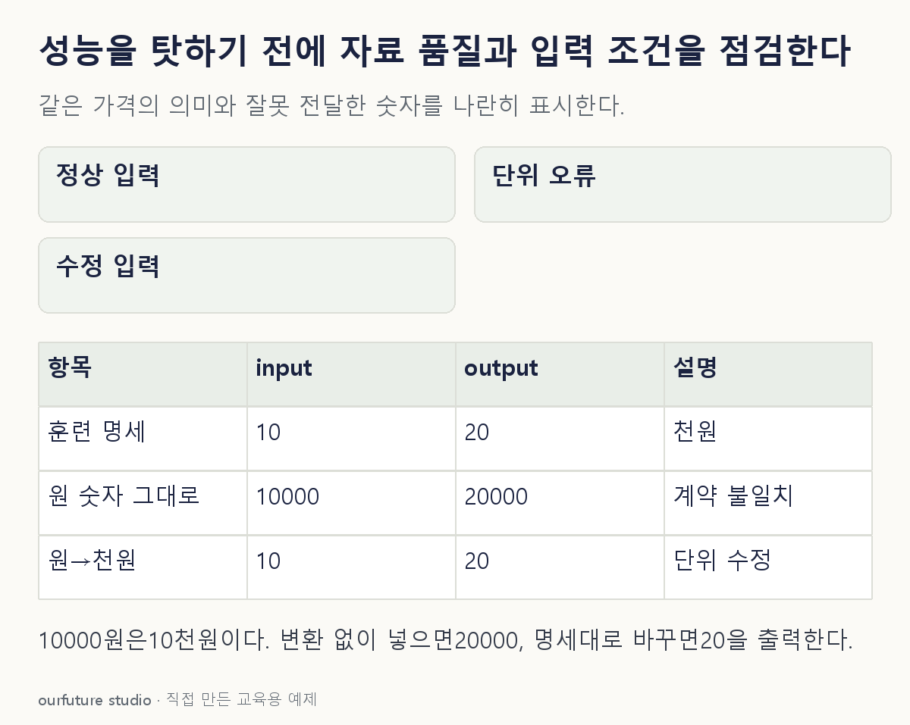

조건을 바꾸며 확인하기
지정 선형식의 입력 계약 점검이다. 실제 가격 예측 성능이나 원인을 확정한 운영 실험이 아니다.
설명 그림과 비교하기
아래 그림과 표는 고정된 설명 예제입니다. 기본·변형 중 어떤 조건인지 캡션을 읽고, 바꾼 입력의 결과는 계산 칸에서 확인하세요.

같은 문제를 직접 골라 보기
훈련 입력의 가격 단위는 천원이다. 같은 상품이 전개 입력에서는 원 단위의 수치 10000으로 들어온다. 이 기간의 실제 정답은 아직 없다.
조건을 더 바꾸면?
10000원을 명세대로 1000으로 나누어 모형에 넣었다. f(x)=2x의 출력은 얼마이며 실제 예측 오차도 알 수 있는가?
변형 풀이 확인
출력은 20이다. 실제 오차는 정답이 없어 아직 알 수 없다.
변환 후 x=10이므로 출력 20은 계산할 수 있다. 기술 계약 복구와 목표값을 맞혔는지는 서로 다른 확인이다.
값이 달라졌나, 값의 뜻이 달라졌나.